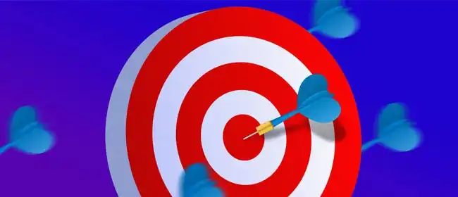

Инвестиции: 0 ₽
Прибыль: 10 000 ₽/мес

Заработок на партнерских программах
Размещать у себя в профиле партнерские ссылки или скидочные промо-коды выгодная идея. Пример: Блогер прочитал интересную книжку и решил поделиться этим со своими подписчиками. Он сделал отдельный пост, где приложил фото книги, а под ней в описании изложил свои впечатления о книге. В конце поста он поместил партнерскую ссылку на книжный интернет-магазин и получает 7% с каждой покупки. При закупке на 100 000 рублей с этого сайта, он, очевидно, получит 7 тыс. рублей.